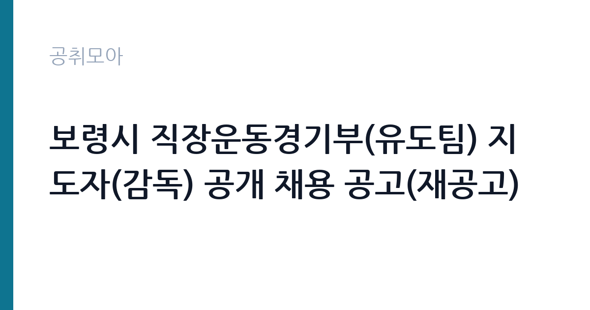

[지자체] 보령시 직장운동경기부(유도팀) 지도자(감독) 공개 채용 공고(재공고)
충청남도 보령시 · 충남 · 마감 2026-11-02 (D-4) · 출처 나라일터

한눈에 보는 모집 조건
| 기관 | 충청남도 보령시 |
|---|---|
| 공고명 | 보령시 직장운동경기부(유도팀) 지도자(감독) 공개 채용 공고(재공고) |
| 고용형태 | 기간제 |
| 근무지 | 충남 |
| 게시일 | 2026-10-30 |
| 마감일 | 2026-11-02 (D-4) |
지원자격, 이렇게 읽으세요
- 직장운동경기부 유도팀 감독 1명
- 접수 ~2026-11-02 마감
- 세부 조건은 원문 공고문 확인
기간제 근로자는 근로계약 기간이 정해진 신분입니다. 계약 기간과 갱신 가능 여부가 근로계약서에 명시되며 기간 만료 시 근로관계가 종료됩니다. 결원 보충이나 특정 사업 기간에 맞춰 채용되는 경우가 많아 업무 범위가 명확합니다. 이번 공고는 충청남도 보령시에서 직접 진행하는 자체 전형으로, 응시자격과 제출서류는 공고문에 항목별로 제시됩니다. 지도자 채용은 자격증과 지도 경력을 동시에 봅니다. 해당 종목 전문스포츠지도사 2급 이상이 필수인 경우가 많고, 실업·대학·프로·중고교 팀 지도 경력 연수를 요구합니다. 여기에 최근 몇 년 안에 전국 규모 공인대회 입상 실적을 요구하는 조항이 붙는 경우가 흔합니다. 지방공무원법상 결격사유와 국민체육진흥법상 결격사유를 함께 확인하므로 두 법령을 모두 확인해야 합니다. 계약 기간이 정해진 기간제 신분이고, 근무실적 평가 후 재계약 여부가 결정됩니다. 서류는 접수 마감 이후 보완이 되지 않으므로 자격 요건과 증빙 서류를 마감 전에 모두 갖춰야 합니다. 공고문에 명시된 우대 사항은 해당 여부를 확인해 증빙을 첨부해야 가점이 반영됩니다. 우대 사항에 해당하면 증빙을 반드시 첨부해야 하며, 누락하면 가점 없이 평가됩니다.
이 공고의 포인트
이 공고의 첫 번째 포인트는 고용 형태입니다. 계약 기간이 정해져 있어 근무 종료 시점이 명확합니다. 그만큼 짧은 기간에 어떤 실적을 남길지가 중요해집니다. 두 번째는 업무 범위가 명확하다는 점입니다. 직장운동경기부 지도자 직무로 채용되므로 배치 이후 담당 업무가 크게 흔들리지 않습니다. 세 번째는 근무지입니다. 충남 지역 근무로 수도권 공고에 비해 지원자 분포가 넓지 않아 상대적으로 경쟁이 분산되는 경우가 있습니다. 처우와 근무 형태가 표로 정리되어 있어 비교해 보기에 편한 공고입니다. 다만 선발 인원이 1명으로 많지 않아 자격을 갖춘 지원자가 몰리면 경쟁률이 높아질 수 있습니다.
전형은 어떻게 진행되나
전형은 서류심사와 면접심사를 기본으로 하고 직무에 따라 필기나 실기, 체력검정이 추가됩니다. 서류 단계에서는 응시자격 충족 여부와 제출서류 형식을 확인하며 이 단계에서 탈락하는 지원자가 적지 않습니다. 면접은 직무 이해도와 경험을 확인하는 방식으로 진행되고 발표는 개별 통보나 홈페이지 게시로 이뤄집니다. 최종합격 이후에는 결격사유 조회와 채용 신체검사가 이어지며 이 절차에서 문제가 확인되면 합격이 취소될 수 있습니다. 구체적인 전형 단계와 배점은 공고문에 표로 정리되어 있으니 원문을 기준으로 준비하십시오. 경력 증명서에 직무 내용이 적혀 있지 않으면 인정받지 못할 수 있으므로 상세 기재를 요청하십시오.
원문에서 확인한 전형 방식
보령시 직장운동경기부 유도팀의 체계적인 육성과 경기력 향상을 위하여 역량 있는 지도자(감독)를 다음과 같이 공개 모집하오니 유능한 체육인의 많은 지원 바랍니다. 1. 채용 분야 및 인원 - 채용종목: 유도 - 직 급: 감독 1명 - 계약기간: 2027. 1. 1. ~ 2028. 12. 31. (2년, 근무실적 평가 후 재계약 가능) - 근무장소: 보령시 일원 2. 응시 자격 요건 - 공통요건: 「지방공무원법」 제31조 결격사유 및 「국민체육진흥법」 제11조의5에 해당하지 아니한 자 - 필수요건: 해당 종목 전문스포츠지도사 2급 이상 자격증 소지자 - 경력요건: 다음 각 호를 전부 충족하는 자 ① 유도 지도 경력(실업·대학·프로·중고교 등) 3년 이상인 자 ② 최근 5년 이내 전국규모 공인대회(전국체전 등) 입상 실적을 보유한 지도자 3. 채용 일정 - 재공고기간: 2026. 10. 30.(금) ~ 11. 2.(월) [4일간] - 원서접수: 2026. 11. 1.(일) ~ 11. 2.(월) 18:00까지 ※ 이메일, 방문 및 등기우편 접수(보령시청 체육진흥과 체육지원팀 / kimkh890808@korea.kr) ※ 기존 최초 공고(보령시 공고 제2026-194
이런 분께 추천해요
- 해당 종목 전문스포츠지도사 자격과 지도 경력을 갖춘 분
- 최근 공인대회 입상 실적을 보유한 분
- 시즌 중 합숙·원정 일정을 수용할 수 있는 분
지원 전 체크리스트
- 응시자격 요건과 경력 기준을 충족하는가 — 경력은 증명서로 입증해야 합니다
- 계약 기간과 근무 시작일·종료일을 확인했는가
- 제출서류 목록을 모두 준비했는가 — 누락 시 서류 단계에서 탈락합니다
- 접수 마감 2026-11-02 이전에 접수 방식을 확인해 제출했는가
모집 일정과 제출 타이밍
공고 게시일은 2026-10-30, 접수 마감은 2026-11-02입니다. 준비 기간은 약 3일로 서류 준비와 자격 증빙을 함께 처리하기에는 넉넉하지 않은 편입니다. 첫 이틀 안에 공고문과 첨부 서식을 내려받아 요건을 확인하고 남은 기간에 증빙 서류를 발급받는 일정이 현실적입니다. 면접은 서류 합격자 발표 후 짧은 간격으로 진행되는 경우가 많으므로 서류 제출과 동시에 면접 준비를 시작하는 편이 안전합니다. 마감일에는 접수 시스템이 몰리므로 하루 전까지 제출을 마치는 것이 좋습니다. 접수 첫날에 몰리면 시스템 접속이 지연될 수 있으므로 오전 시간대 제출이 안전합니다. 충남 근무지는 산업단지와 농촌 지역이 섞여 있어 통근 조건이 공고마다 다릅니다. 마감이 사흘 남짓이라 지금 바로 서류를 시작해야 하는 일정입니다. 선발 인원이 한두 명 수준이라 지원자 개개인의 서류 완성도가 그대로 평가에 반영됩니다.
직무 이해하기: 지자체
지방자치단체는 지역 행정과 복지, 시설 운영을 담당합니다. 부서별로 사업을 수행하고 결원이나 신규 사업에 따라 임기제와 기간제 인력을 채용합니다. 조례와 자체 인사 규정에 따라 채용 절차가 진행됩니다. 직장운동경기부 지도자는 시청·군청 소속 실업팀 선수를 지도하며 경기력을 끌어올리는 일을 합니다. 연간 훈련 계획을 세우고 일일 훈련을 운영하며, 체력·기술·전술 훈련을 시즌 일정에 맞춰 배분합니다. 전국체전과 각종 공인대회 출전을 준비하고, 대회 참가 신청과 선수 등록, 용품과 훈련장 관리까지 팀 운영 전반을 맡습니다. 선수 선발과 계약, 부상 관리, 학업·진로 상담도 지도자의 몫입니다. 시즌 중에는 합숙과 원정이 이어져 주말 근무가 발생합니다. 업무는 혼자 처리하기보다 부서 단위로 나눠 진행되므로 담당 구역과 협업 범위를 입사 초에 확인하는 것이 중요합니다. 직무 교육은 입사 후 기관 자체 계획에 따라 진행되므로 사전 경험이 없어도 시작할 수 있습니다.
자기소개서 작성 팁
지원서는 지도 실적을 시즌 단위로 정리하는 것이 효과적입니다. 맡았던 팀과 선수 규모, 지도 기간, 대회 성적 변화를 수치로 제시하십시오. 선수를 발굴해 성장시킨 사례가 있다면 가장 강한 소재입니다. 훈련 프로그램을 직접 설계해 적용한 경험과 부상 예방·관리 방식도 함께 쓰십시오. 팀을 운영하며 행정 업무를 병행한 경험이 있다면 기관이 안심할 근거가 됩니다. 직무 경험이 많지 않다면 경험의 양보다 과정을 구체적으로 쓰는 편이 낫습니다. 어떤 상황에서 무엇을 판단했고 어떤 결과가 나왔는지 순서대로 서술하면 신뢰가 생깁니다. 지원 동기와 기여 방안은 한 문단씩 짧게 유지하고, 가장 자신 있는 경험에 분량을 몰아주십시오. 마지막 문장은 포부보다 구체적인 실행 계획으로 끝내는 것이 좋습니다.
면접 준비 포인트
면접에서는 훈련 철학과 성과 관리 방식을 확인합니다. 선수의 기량이 정체됐을 때 어떤 진단을 거쳐 훈련을 바꿀지, 부상 선수를 시즌 중에 어떻게 관리할지 묻습니다. 팀 성적이 부진할 때 선수단과 어떻게 소통했는지 구체적 사례를 준비하십시오. 지도 경력 중 맡았던 팀 규모와 성적 변화를 수치로 제시하면 설득력이 생깁니다. 답변은 상황, 판단, 조치의 순서로 정리하면 전달이 분명해집니다. 모르는 질문에는 모른다고 밝히고 확인 방법을 제시하는 편이 억지 답변보다 낫습니다. 마지막에는 근무 의사와 함께 2026-11-02 이후 일정에 언제든 응할 수 있다는 점을 전달하십시오. 면접은 공고문에 적힌 직무 내용을 얼마나 이해하고 있는지 확인하는 질문으로 시작하는 경우가 많으니, 모집분야 문구를 그대로 읽어 두는 것이 도움이 됩니다.
급여·근무조건 읽는 법
충청남도 보령시의 구체적인 보수 수치는 이 공고 원문의 처우 항목과 보수표에서 확인해야 합니다. 공시 자료로 확인되지 않은 금액은 이 글에서 추정해 제시하지 않습니다. 알리오 2025년 결산 공시 기준 공공기관 전체 일반정규직 1인당 평균보수는 7,376만 9천원, 신입사원 평균초임은 4,031만 6천원입니다(무기계약직 미포함). 직장운동경기부 지도자는 지방자치단체 소속 기간제 근로자로 채용되는 경우가 많아, 보수는 지자체의 기간제근로자 임금 기준과 계약서에 정한 금액을 따릅니다. 계약 기간이 정해져 있으므로 월 보수에 계약 개월 수를 곱한 총액을 기준으로 비교해야 합니다. 대회 입상 성과에 따라 별도 수당이나 상여 조항이 붙는 경우도 있어 공고문 처우 항목을 확인해야 합니다. 2026년 적용 최저임금은 시급 10,320원, 월 환산 2,156,880원(주 40시간·209시간 기준)입니다. 고용노동부 고시 제2025-47호로 확정된 금액입니다. 공고문에 금액이 제시되지 않은 항목은 원문 보수표나 처우 설명에서 확인해야 하며 확인되지 않은 수치는 쓰지 않는 것이 원칙입니다. 비교할 때는 월 급여뿐 아니라 상여·명절휴가비·복지포인트·초과근무수당까지 포함한 연간 총액으로 계산하십시오. 기간제라면 계약 기간 동안의 총액을, 무기계약이라면 호봉 상승과 정년까지의 누적 소득을 기준으로 판단하는 편이 정확합니다.
자주 묻는 질문
- 선발 인원은 몇 명인가요?
공고문 기준 1명입니다. 직종별로 인원이 나뉘는 경우가 있으니 모집분야 항목을 함께 확인하십시오. - 근무지는 어디인가요?
충남 지역의 충청남도 보령시 소속 근무지입니다. 세부 주소와 출퇴근 조건은 원문 공고문에서 확인할 수 있습니다. - 보수는 얼마인가요?
채용 신분(기간제)과 기관 임금 규정에 따라 정해지며 구체적인 금액은 공고문 처우 항목에 제시됩니다. 금액이 공개되지 않은 경우에는 원문의 보수표를 확인하십시오.
함께 보면 좋은 공고
[지자체] 2026년 제5회 부산광역시 해운대구 임기제공무원(무대음향감독외 4개 분야) 임용시험 공고 — 마감 2026-11-09[지자체] 2026년 제4·6·7회(재공고) 용인시 지방임기제공무원 채용시험 시행계획 공고 — 마감 2026-11-11[지자체] 2026년 제10회 용인시 지방임기제공무원 채용시험 시행계획 공고 — 마감 2026-11-11출처: 나라일터 공개정보를 바탕으로 공취모아가 정리한 안내글입니다. 모집 조건·일정은 변경될 수 있으니 지원 전 반드시 원문 공고문을 확인하세요. 본 글은 정보 제공용이며 합격을 보장하지 않습니다.